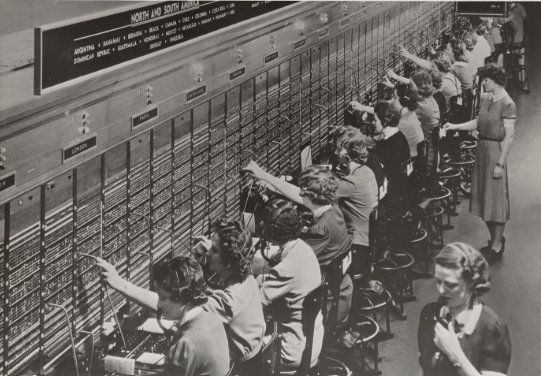

Humans have come so far in the world of communication, evolving from
primitive methods such, as pheremones, to spoken language, and eventually
across continental distances.
Below you can find links that outline the general history of telecommunication if you are interested:
-Wikipedia
-Networking and the Web
-The Internet's History
Wired Communication:
